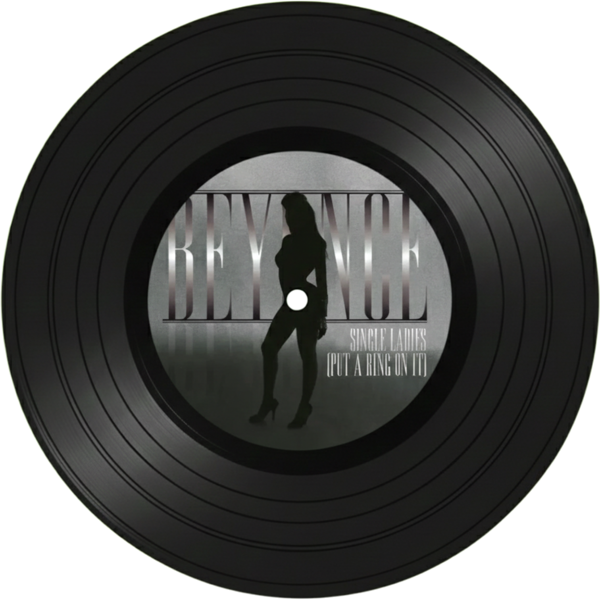
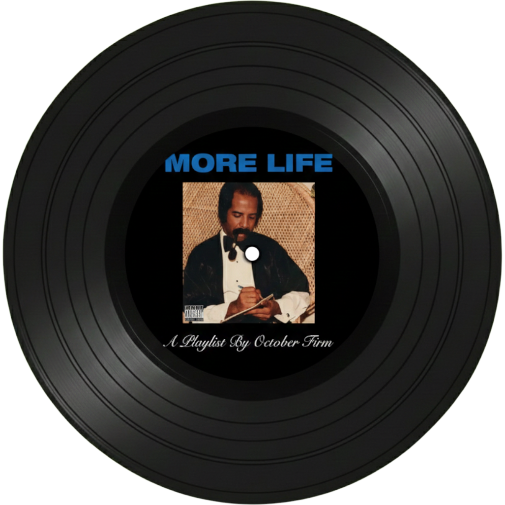
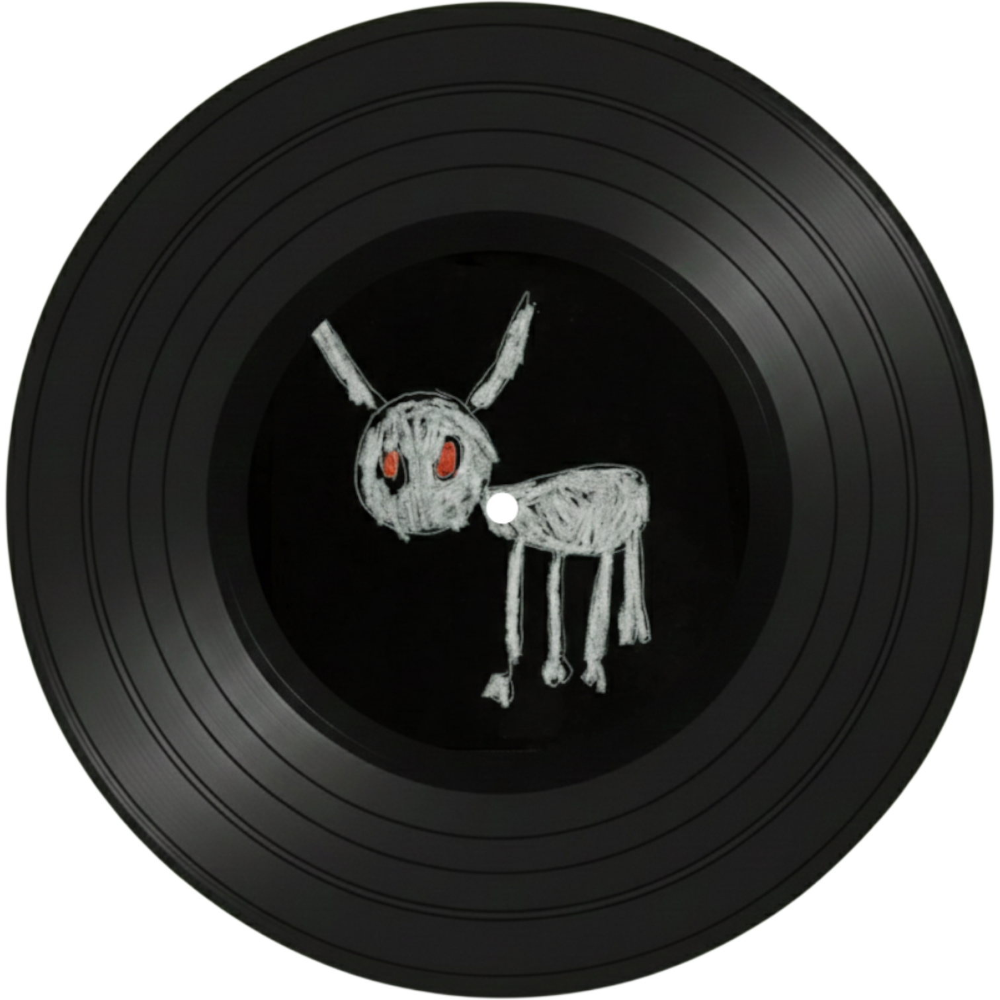
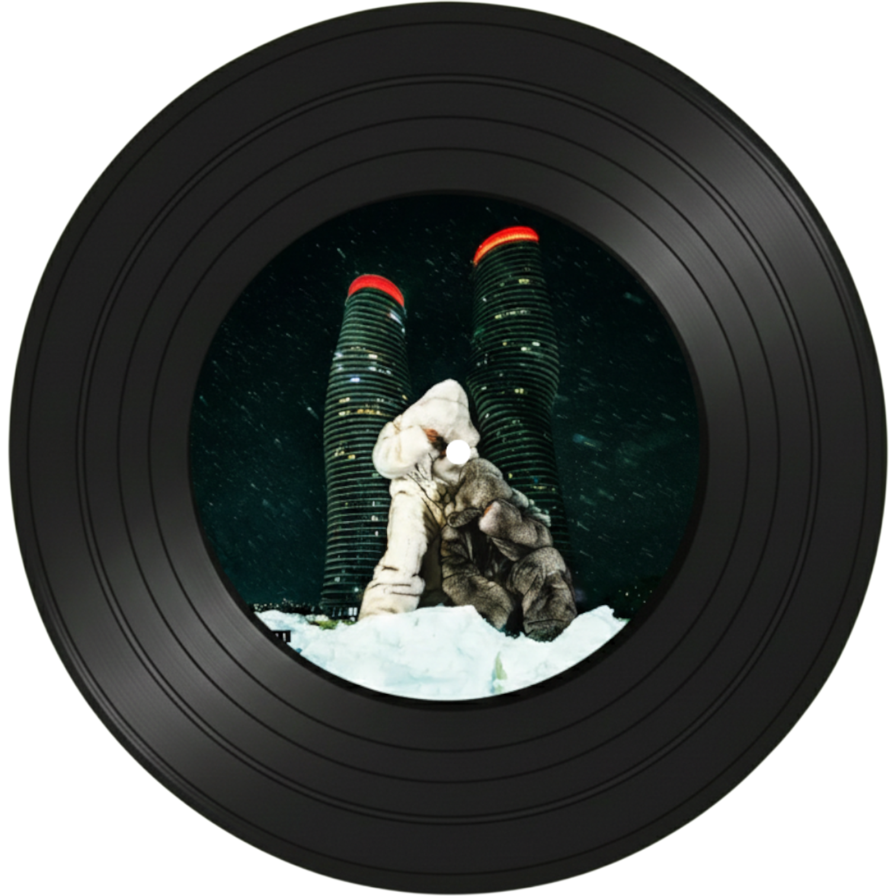

Drake


Hold in, we're going home (feat. maid Jordan)
R&B와 팝이 결합된 부드러운 신스팝 사운드로 감성적인 멜로디가 특징이다.

Passionfruit
카리브해 댄스홀 리듬과 미니멀한 프로덕션이 조화를 이루는 트로피컬 사운드이다.

Rich baby daddy (feat.Sexyy Red, SZA)
감각적인 플로우와 트랩 비트가 결합된 현대적인 힙합 트랙이다.

NOKIA
그루비한 베이스라인과 잔잔한 멜로디가 어우러진 세련된 R&B 힙합 트랙이다.